Jenkins
Pre-conditions to install
-
Install brew from
HERE
-
Install jenkins from
HERE
Glosary
-
Jenkins
-
Server app for build and test with CI/CD process
-
Jenkins Job
- Scripts that we want to automate
-
Pipeline
-
Stages
-
The stages block contains most of the work that the pipeline
performs
-
Jenkins agents
-
Program that executes the stages, it can be multiple stages for
balnce the load
-
Process in CI/CD
- Code compilation
- Run test
- Build a new version of the app
- Deploy the app to the server
Jenkins commands
-
Shell commands for Jenkins projects
HERE
-
Install jenkins with brew
brew install jenkins-lts
-
Start Jenkins service
brew services start jenkins-lts
-
Restart the Jenkins service
brew services restart jenkins-lts
-
Update the Jenkins version
brew upgrade jenkins-lts
-
Stop jenkins services
brew services stop jenkins-lts
Jenkins initial set-up
-
Start Jenkins service
brew services start jenkins-lts
-
Navigate to the local host 8080
HERE
-
Search for the path displayed in the jenkins login page to get the
initial key
- Search the secret key from the file path
-
Paste the key in the password field for starting configuration process
- Install suggested plugins
- Create an admin user
Install pluggins
- Go to the left menu manage jenkins
- Select pluggins
- open available pluggins section
-
Useful pluggins:
- NodeJS
-
AnsiColor (avoid special characters in the console results)
-
HTML Publisher plugin (html report for execution)
- Docker pipeline
How to publish a HTML report to a pipline
- Install HTML Publisher plugin
- Search at the end of the pipline config, pipline syntax
- In sample step add the html report pluggin
-
in html directory, add the path in where the test results are saved
- In index, add the report file created usually is index.html
- In report title, add a name to your report
- Press on generate pipeline script
- Copy and paste to your post action in your jenkis file
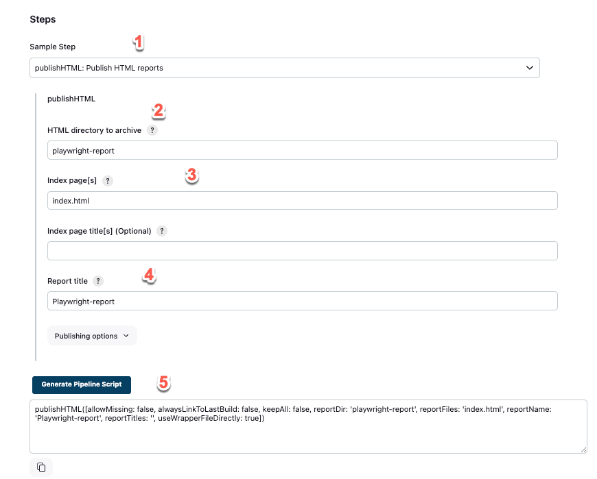
How to create a free style project
- Left menu/ new item
- Add a name to a free style project
-
In General options start to fill the project configurations parameters
-
In git hub project field, you can add your project repo from github
-
In use custom work space, add the path in where your project will be
allocated after each jenkins build
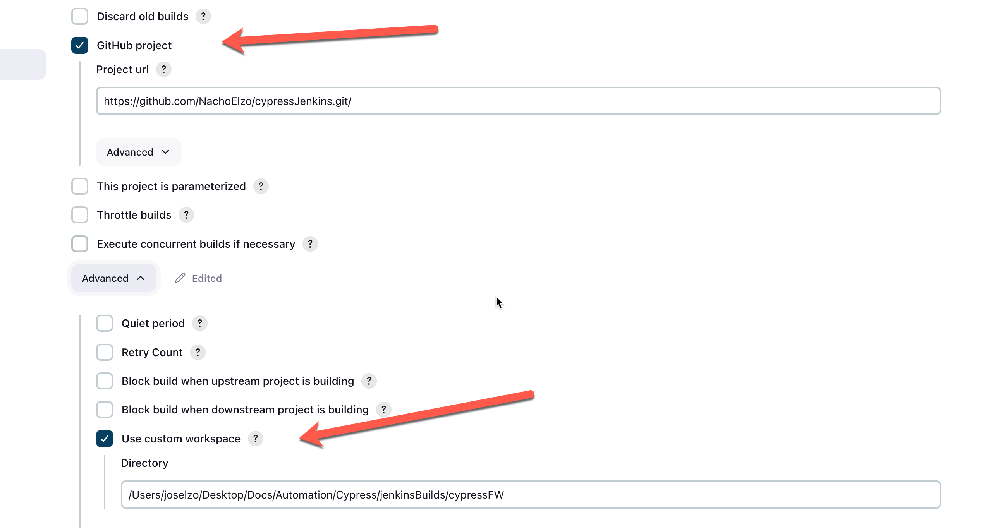
Set up node environment in a free style project
- Go to you jenkins project and configure settings
- In build environment check Provide Node & npm bin/ folder to PATH
- Select the node configuration previously setted
- Leave the other parameters by default
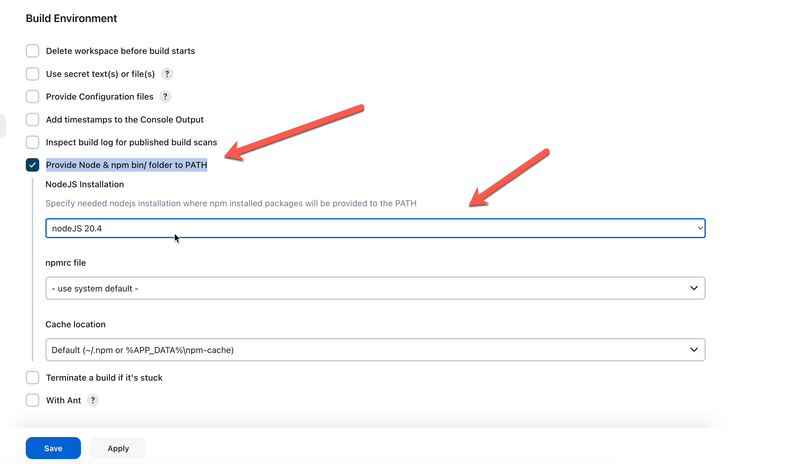
- In build stepts section, add execute shell
-
Add the npm command that you have in your project script from your
package.json
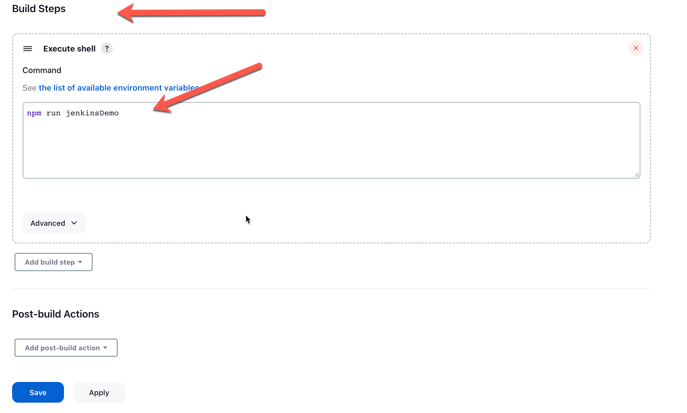
How to create a new pipeline
- Left menu/ new item
- Add a name to pipeline
-
In pipline section you will be able to create a new piple "use groovy"
- With sh command create scripts for linux
-
Usefully linux commands
Here
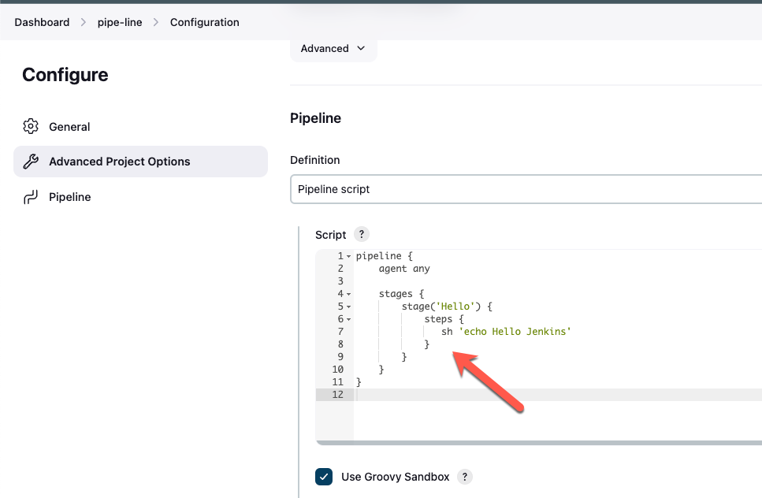
- Save and build the pipline created
-
Access to the executed job and you will be able to see the console
output
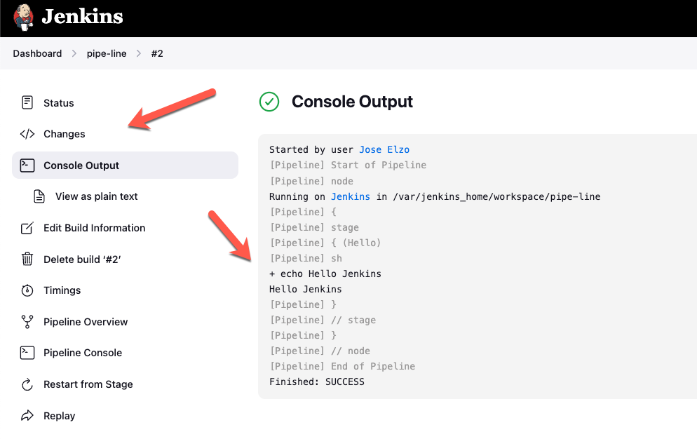
Create a SCM pipeline
- Create a jenkinsfile inside your project
- Designe your pipeline project in the jenkins file created
- Create a new pipeline project in jenkins
- In build steps configure:
- Add a description of your project
- Select SCM instead pipeline
- Select GIT
- Add the http github path where your project is
- Select the branch where your project is */main or */master
-
In the script path add the path where your jenkins file is `key
sensitive`
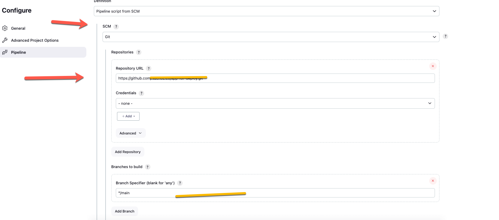
How to add a set of steps into one in a pipeline
- sh is a common sintax for all commands
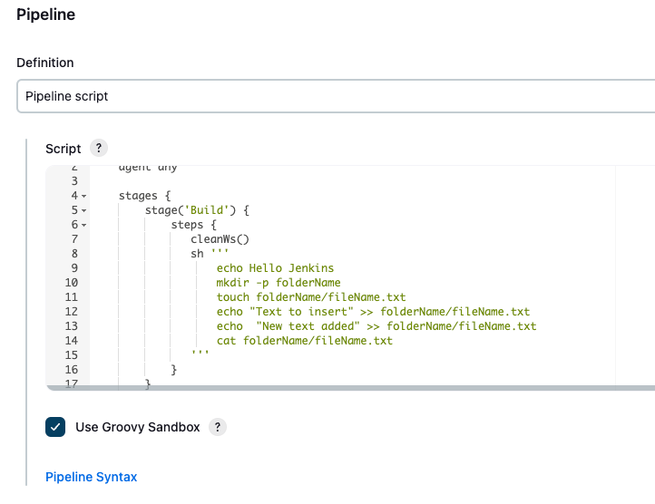
- Save and build the pipline created
Creates and use variables
- Create an envirtonment object before stages
- Create a variable (use caps)
- use the variable adding '$variableName'
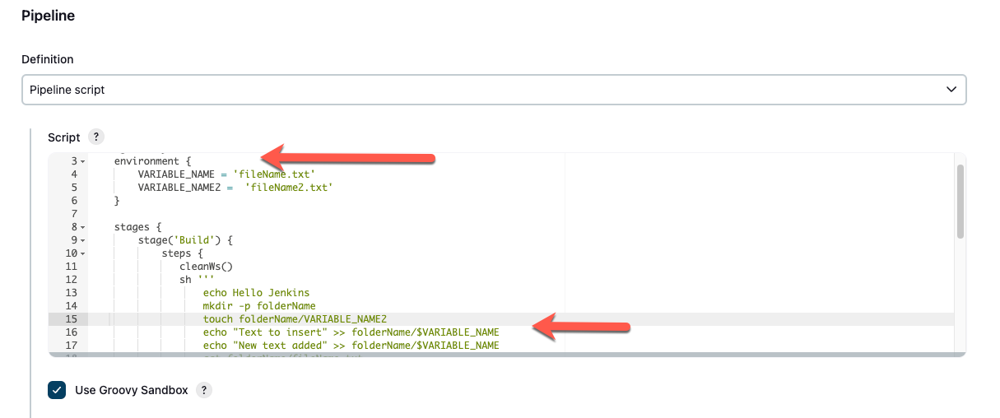
Reuse node workspaces to avoid creating multiples folders
-
This may work when you have dependencies between workspaces in jenkins
- add: reuseNode true
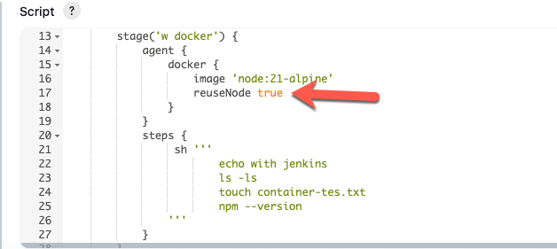
Acces to the files or folders created in a pipeline
- Open the build executions options, select the section workspaces
-
Click on the path displayed (is where the files created are located)
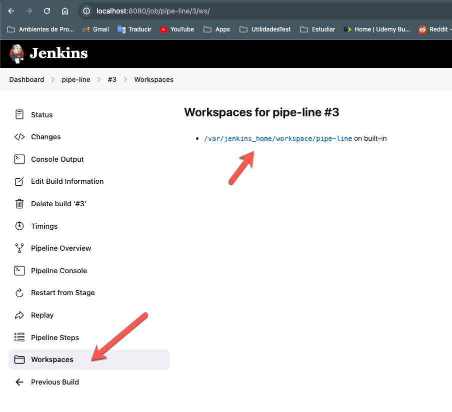
- Remove logs and files from the workspace
- Create post stage that cleans the workspace
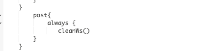
Creates a Post acction that stores all logs and files in artifact path
- Add a post action in the pipeline creating an artifact
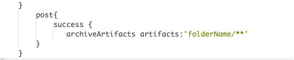
- Inside the build options you will se the artifact path
- You will be able to click and open the artifacts
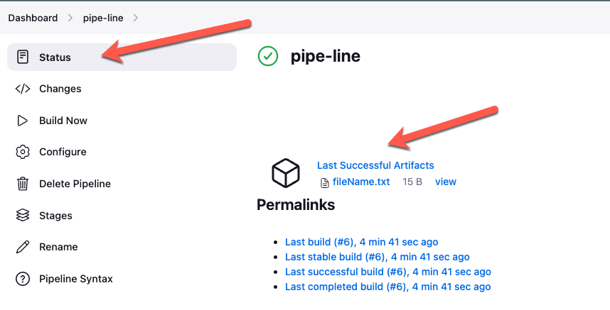